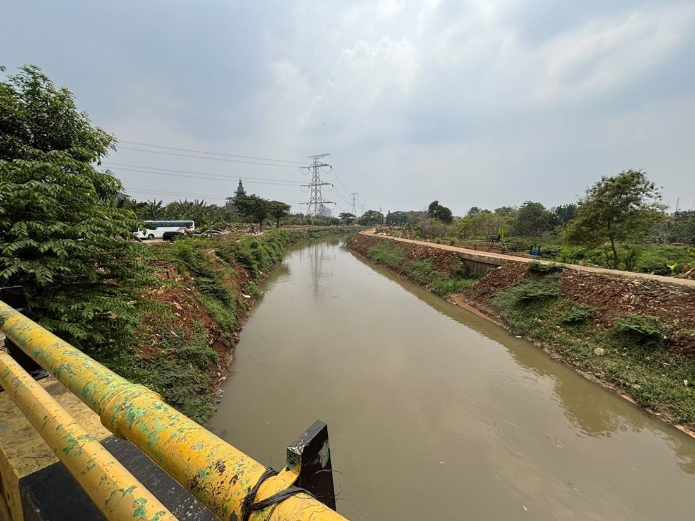
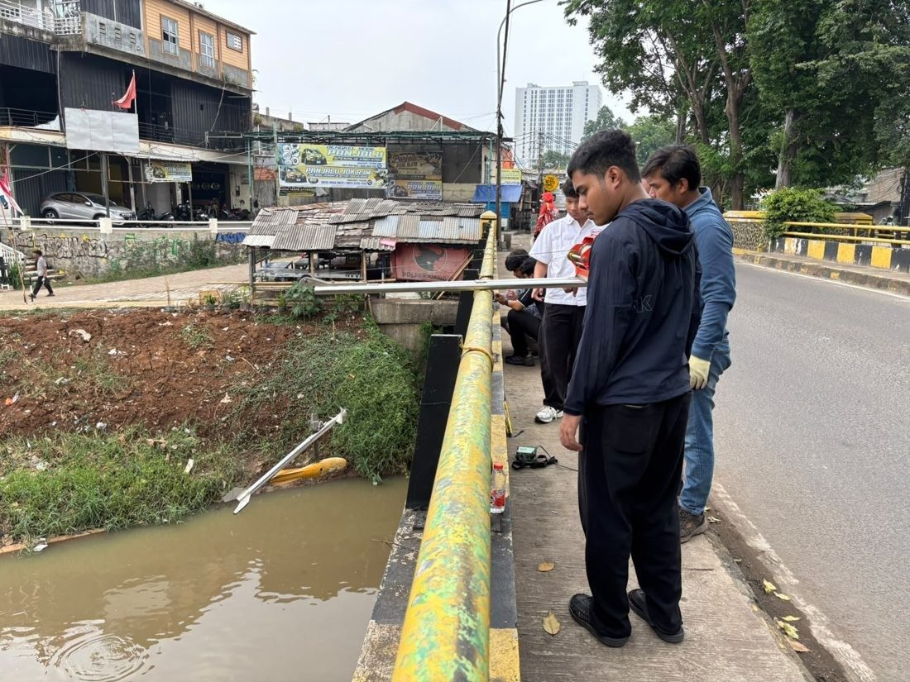
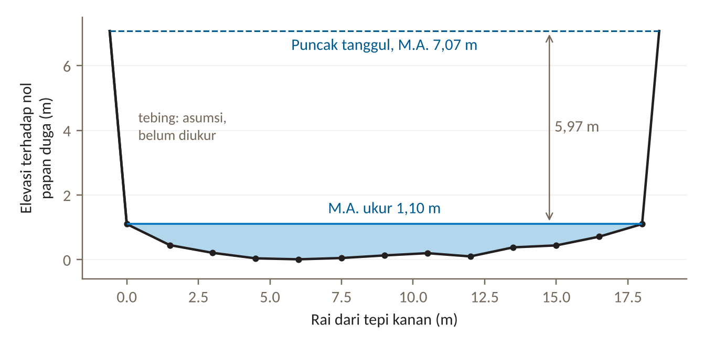
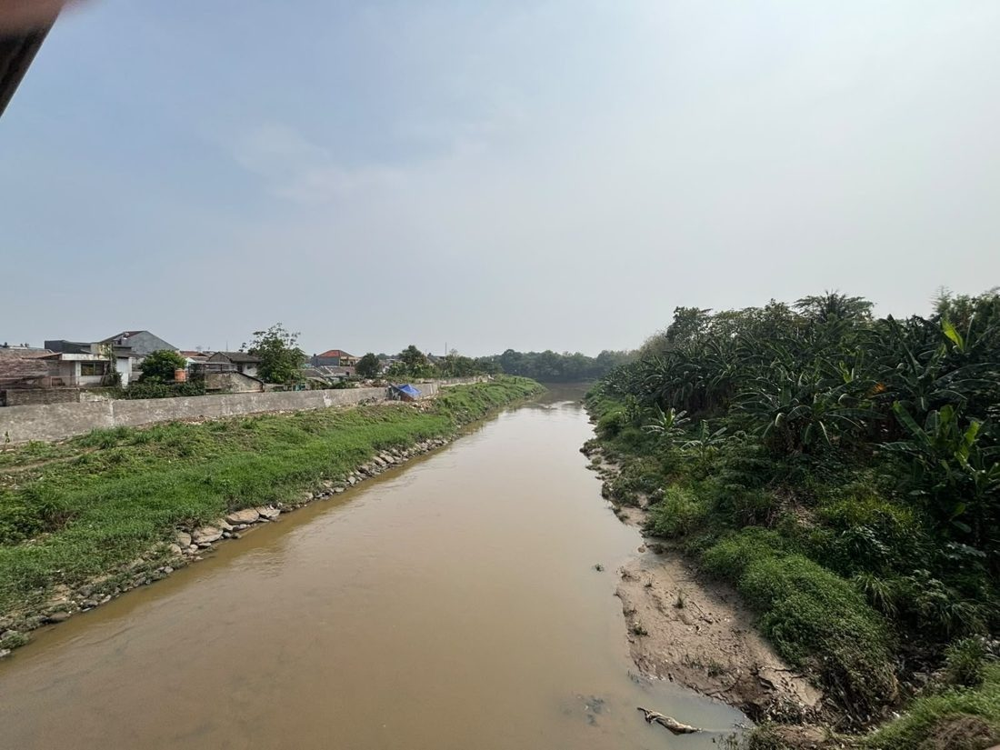
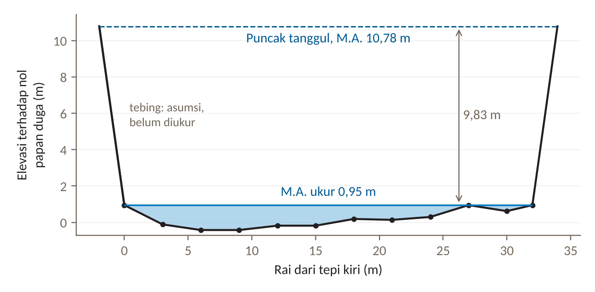
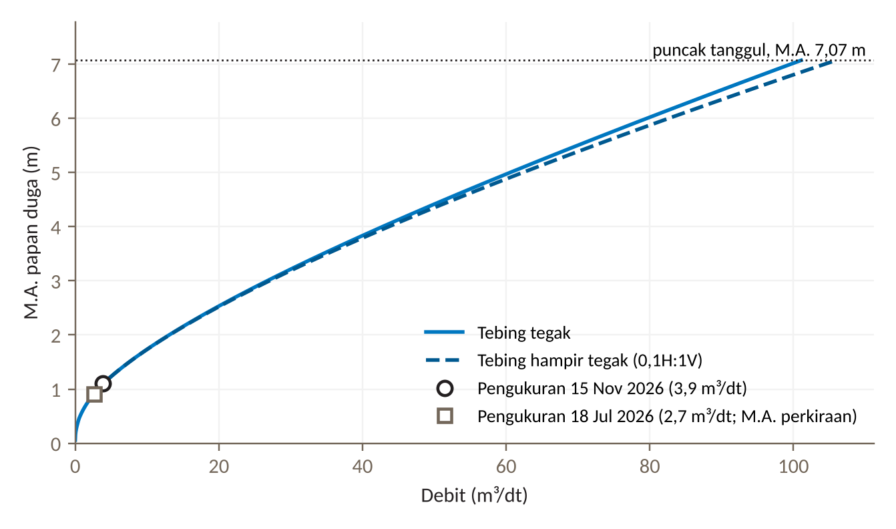
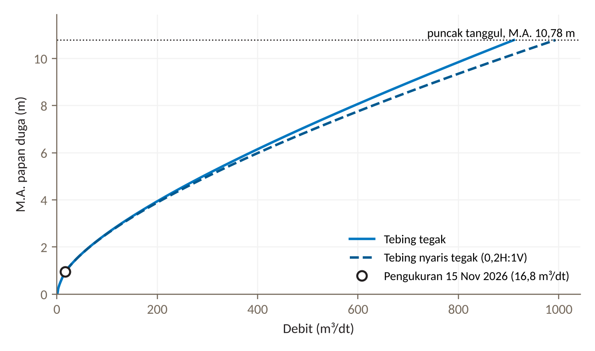

Daftar isi
Pada 15 November 2026, tim HESLab mengukur debit Sungai Angke dan Sungai Bekasi. Survei ini bagian dari penelitian DIKTI Integrasi Data Satelit, Pemodelan Hidrologi, dan Machine Learning untuk Peringatan Dini Banjir JABODETABEK. Tujuannya dua: mengetahui debit kedua sungai saat itu, dan memperoleh bentuk penampangnya untuk memperkirakan berapa debit yang dapat ditampung sungai sebelum air mencapai puncak tanggul. Angka kapasitas inilah yang dipakai sebagai ambang pada rantai peringatan dini banjir.

Ringkasan hasil
| Sungai | Debit terukur, 15 Nov 2026 | Perkiraan kapasitas penuh tanggul |
|---|---|---|
| Angke | 3,9 m³/dt | 101–106 m³/dt |
| Bekasi | 16,8 m³/dt | 911–993 m³/dt |
Debit terukur adalah hasil pengukuran langsung. Kapasitas penuh tanggul adalah perkiraan awal dari hitungan, karena bentuk tebing di atas muka air belum diukur (lihat bagian Keterbatasan).
Waktu dan lokasi
| Uraian | Sungai Angke | Sungai Bekasi |
|---|---|---|
| Waktu | 11.26–12.03 WIB | 09.12–10.05 WIB |
| Lokasi | Jembatan Angke, Tangerang | jembatan rangka baja (nama lokasi tidak tercatat pada formulir) |
| Cuaca | cerah berawan | cerah |
| Tinggi muka air pada papan duga | 1,10 m | 0,95 m |
| Lebar muka air | 18 m | 32 m |
| Jarak antarvertikal | 1,5 m | 3,0 m |
| Jarak muka air ke puncak tanggul | 5,97 m | 9,83 m |
Tinggi muka air pada papan duga sama pada awal dan akhir pengukuran di kedua lokasi, sehingga aliran dapat dianggap tetap selama pengukuran.
Cara mengukur
Pengukuran dilakukan dari jembatan dengan alat ukur arus (current meter) berbaling-baling dan sounding reel, seperti pada survei debit Juli 2026. Pada tiap vertikal diukur kedalaman air, lalu kecepatan arus di dua titik, pada 0,2 dan 0,8 kali kedalaman dari muka air. Vertikal yang dangkal di tepi diukur di satu titik, pada 0,6 kali kedalaman. Debit dihitung dengan metode pias tengah: debit tiap pias adalah lebar × kedalaman × kecepatan rata-rata, dan debit sungai adalah jumlah debit semua pias.


Sungai Angke
Debit terukur 3,89 m³/dt, dengan luas penampang basah 14,07 m² dan kecepatan rata-rata 0,28 m/dt. Kedalaman terbesar 1,09 m. Arus terkuat ada di bagian tengah, pada jarak 6–10,5 m dari tepi (0,35–0,40 m/dt); empat vertikal ini membawa sekitar 59 % debit.
| Jarak dari tepi (m) | Kedalaman (m) | Kecepatan rata-rata (m/dt) | Luas (m²) | Debit (m³/dt) | Porsi debit (%) |
|---|---|---|---|---|---|
| 1,5 | 0,65 | 0,061 | 0,975 | 0,060 | 1,5 |
| 3,0 | 0,89 | 0,146 | 1,335 | 0,195 | 5,0 |
| 4,5 | 1,06 | 0,236 | 1,590 | 0,375 | 9,6 |
| 6,0 | 1,09 | 0,394 | 1,635 | 0,644 | 16,6 |
| 7,5 | 1,05 | 0,352 | 1,575 | 0,555 | 14,3 |
| 9,0 | 0,97 | 0,381 | 1,455 | 0,554 | 14,3 |
| 10,5 | 0,90 | 0,400 | 1,350 | 0,540 | 13,9 |
| 12,0 | 1,00 | 0,250 | 1,500 | 0,375 | 9,6 |
| 13,5 | 0,72 | 0,276 | 1,080 | 0,298 | 7,7 |
| 15,0 | 0,66 | 0,260 | 0,990 | 0,257 | 6,6 |
| 16,5 | 0,39 | 0,058 | 0,585 | 0,034 | 0,9 |
| Jumlah | 0,276 | 14,07 | 3,89 | 100 |
Jarak diukur dari tepi kanan aliran.

Sungai Bekasi
Debit terukur 16,83 m³/dt, dengan luas penampang basah 25,66 m² dan kecepatan rata-rata 0,66 m/dt. Aliran terkumpul di sisi kiri: pada jarak 6–18 m dari tepi kiri arusnya 0,82–1,00 m/dt, dan lima vertikal pertama membawa sekitar 95 % debit. Sisi kanan dangkal dan arusnya hampir diam; pada jarak 27 m tercatat endapan sedimen.
| Jarak dari tepi (m) | Kedalaman (m) | Kecepatan rata-rata (m/dt) | Luas (m²) | Debit (m³/dt) | Porsi debit (%) |
|---|---|---|---|---|---|
| 3,0 | 1,06 | 0,216 | 3,180 | 0,687 | 4,1 |
| 6,0 | 1,37 | 0,958 | 4,110 | 3,938 | 23,4 |
| 9,0 | 1,37 | 0,818 | 4,110 | 3,362 | 20,0 |
| 12,0 | 1,13 | 1,003 | 3,390 | 3,400 | 20,2 |
| 15,0 | 1,13 | 0,939 | 3,390 | 3,184 | 18,9 |
| 18,0 | 0,76 | 0,901 | 2,280 | 2,054 | 12,2 |
| 21,0 | 0,81 | 0,052 | 2,430 | 0,127 | 0,8 |
| 24,0 | 0,65 | 0,028 | 1,950 | 0,055 | 0,3 |
| 27,0 | 0,00 | 0,000 | 0,000 | 0,000 | 0,0 |
| 30,0 | 0,33 | 0,028 | 0,825 | 0,023 | 0,1 |
| Jumlah | 0,656 | 25,66 | 16,83 | 100 |
Jarak diukur dari tepi kiri aliran.


Dibanding pengukuran Juli
| Parameter | Angke, 18 Jul 2026 | Angke, 15 Nov 2026 | Bekasi, 15 Nov 2026 |
|---|---|---|---|
| Lebar muka air (m) | 15,0 | 18,0 | 32,0 |
| Luas penampang basah (m²) | 8,43 | 14,07 | 25,66 |
| Kedalaman terbesar (m) | 0,90 | 1,09 | 1,37 |
| Kecepatan rata-rata (m/dt) | 0,316 | 0,276 | 0,656 |
| Debit (m³/dt) | 2,67 | 3,89 | 16,83 |
| Jumlah vertikal ukur | 8 | 11 | 9 |
Debit Sungai Angke pada November lebih besar daripada Juli, tetapi keduanya masih aliran rendah. Debit Juli di sini dihitung ulang dengan rumus alat yang sama dengan November, sehingga menjadi 2,67 m³/dt (sebelumnya 2,65 m³/dt). Lokasi Juli tercatat Jembatan Ciledug Indah, sedangkan November Jembatan Angke, Tangerang; apakah keduanya penampang yang sama masih perlu dipastikan.
Perkiraan kapasitas penuh tanggul
Kapasitas dihitung dengan persamaan Manning. Kemiringan muka air dan kekasaran dasar sungai tidak diukur, sehingga keduanya digabung menjadi satu parameter yang nilainya disesuaikan agar hitungan sama dengan debit terukur. Di atas muka air saat survei, tebing dianggap tegak sampai puncak tanggul (batas bawah) atau hampir tegak (batas atas). Dari situ disusun hubungan tinggi muka air dan debit sampai puncak tanggul.

Untuk Sungai Angke, kapasitas penuh tanggul (muka air 7,07 m pada papan duga) diperkirakan 101–106 m³/dt. Pengukuran Juli, bila ditempatkan pada penampang yang sama, jatuh dekat lengkung ini: parameternya hanya berselisih 2 % dari hasil November.

Untuk Sungai Bekasi, kapasitas penuh tanggul (muka air 10,78 m) diperkirakan 911–993 m³/dt. Angka ini bergantung pada jarak muka air ke puncak tanggul. Formulir lapangan terbaca 8,83 m, sedangkan hitungan memakai 9,83 m; bila yang benar 8,83 m, kapasitasnya sekitar 790–860 m³/dt.
Keterbatasan
- Bentuk penampang hanya terukur sampai muka air saat survei. Lengkung diperpanjang sampai sekitar 6 kali (Angke) dan 11 kali (Bekasi) tinggi muka air terukur, dengan bentuk tebing dari pengamatan, bukan pengukuran. Foto di sekitar jembatan memperlihatkan tebing yang miring dan bervegetasi, sehingga anggapan tebing hampir tegak masih perlu dibuktikan.
- Lengkung Bekasi bertumpu pada satu pengukuran.
- Lama hitungan putaran per titik tidak tercatat pada formulir dan dianggap 40 detik, sama dengan survei Juli. Bila berbeda, debit dan seluruh lengkung ikut bergeser sebanding.
- Satu pias membawa 16,6 % (Angke) dan 23,4 % (Bekasi) dari debit, di atas anjuran umum sekitar 10 %. Pengukuran berikutnya perlu vertikal yang lebih rapat.
- Pengaruh pilar dan gelagar jembatan serta pembendungan dari hilir belum diperhitungkan.
Karena itu, lengkung pada tulisan ini adalah perkiraan awal untuk ambang sementara peringatan dini, bukan lengkung debit terkalibrasi.
Langkah berikutnya
- Mengukur penampang melintang dari puncak tanggul kiri sampai kanan di kedua lokasi.
- Mengukur kemiringan muka air pada ruas pengukuran.
- Mengukur debit ulang saat muka air lebih tinggi, dengan vertikal lebih rapat.
- Mencatat lama hitungan per titik, nama lokasi, koordinat, dan tinggi muka air awal–akhir pada setiap formulir.
- Memastikan jarak muka air ke puncak tanggul di Bekasi dan kesamaan lokasi pengukuran Angke.